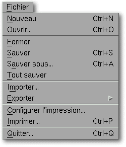

<!-- Documentation XQuad (c)1995-2000 AXENE contact axene@axene.org>
<html>

<head>
<title>Menu Fichier</title>
</head>

<body BGCOLOR="#FFFFFF" BACKGROUND="Images/back.gif" TEXT="#000000">

<p ALIGN="right">  </p>

<p><br>
<br>
Le menu déroulant Fichier comporte toutes les fonctions qui nécessitent l'utilisation de
fichiers sur le disque. <br>
<br>
</p>

<hr>

<p align="center"><br>
 <br>
<small><i>Photo d'écran&nbsp;: Menu déroulant Fichier </i></small></p>

<p><br>
</p>

<hr>

<p><br>
</p>

<h3>Le menu Fichier comporte les entrées suivantes&nbsp;:</h3>

<ul>
  <li><a NAME="new_menu_entry">l'entrée <i>&quot;Nouveau...&quot;</i> permet de <b>créer un
    nouveau document</b>. Cela ouvre une nouvelle feuille de calcul nommée <i>&quot;Sans
    Titre X&quot;</i>. </a><br>
    &nbsp; </li>
  <li><a NAME="open_menu_entry">l'entrée <i>&quot;Ouvrir...&quot;</i> permet de <b>charger un
    document XQuad</b> depuis un fichier. Elle appelle le sélecteur de fichier '</a><a HREF="Box_File_Selectors.html#fs_load">Ouverture d'un document</a>'. <br>
    &nbsp; </li>
  <li><a NAME="close_menu_entry">l'entrée <i>&quot;Fermer&quot;</i> permet de <b>fermer le
    document actif</b>. Si ce document a été modifié depuis sa dernière sauvegarde, une
    boîte de dialogue proposera de le sauver. </a><br>
    &nbsp; </li>
  <li><a NAME="save_menu_entry">l'entrée <i>&quot;Sauver&quot;</i> permet de <b>sauvegarder
    le document actif</b> sous son nom d'origine. Si aucun nom n'a été préalablement donné
    au document, le sélecteur de fichier '</a><a HREF="Box_File_Selectors.html#fs_save">Sauvegarde
    du document sous...</a>' apparaîtra pour saisir le nom du fichier. <br>
    &nbsp; </li>
  <li><a NAME="save_as_menu_entry">l'entrée <i>&quot;Sauver sous...</i> &quot; permet de <b>sauvegarder
    le document actif sous un autre nom</b> que celui d'origine. Elle appelle le sélecteur de
    fichier '</a><a HREF="Box_File_Selectors.html#fs_save">Sauvegarde du document sous...</a>'.
    <br>
    &nbsp; </li>
  <li><a NAME="save_all_menu_entry">l'entrée <i>&quot;Tout sauver&quot;</i> permet de <b>sauver
    tous les documents</b> ouverts ayant subi des modifications. Si un document a un nom, il
    sera sauvé sous ce nom, sinon le sélecteur de fichier '</a><a HREF="Box_File_Selectors.html#fs_save">Sauvegarde du document sous...</a>' sera ouvert. <br>
    &nbsp; </li>
  <li><a NAME="import_menu_entry">l'entrée <i>&quot;Importer&quot;</i> permet d'<b>importer
    dans XQuad des données venant d'origines diverses</b>. Cela ouvre le sélecteur de
    fichier '</a><a HREF="Box_FS_Import.html">Importation de document</a>'. <br>
    &nbsp; </li>
  <li><a NAME="export_menu_entry">l'entrée <i>&quot;Exporter&quot;</i> ouvre le
    sous-menu&nbsp;:</a><p align="center"> </p>
    <ol>
      <li><a NAME="export_vector_menu_entry">l'entrée <i>&quot;Dessin Vectoriel...&quot;</i>
        permet d'<b>exporter une région de cellules ou un graphique sous forme de dessin
        vectoriel</b>. Cela ouvre le sélecteur de fichier '</a><a HREF="Box_FS_Export.html#fs_export_vector">Exportation de document</a>'. <br>
        &nbsp; </li>
      <li><a NAME="export_text_menu_entry">l'entrée <i>&quot;Texte...&quot;</i> permet d'<b>exporter
        une région de cellules en Texte</b>. Cela ouvre le sélecteur de fichier '</a><a HREF="Box_FS_Export.html#fs_export_text">Exportation de document</a>'. <br>
        &nbsp; </li>
      <li><a NAME="export_html_menu_entry">l'entrée <i>&quot;HTML...&quot;</i> permet d'<b>exporter
        une région de cellules en HTML</b>. Cela ouvre le sélecteur de fichier '</a><a HREF="Box_FS_Export.html#fs_export_html">Exportation de document</a>'. <br>
        &nbsp; </li>
    </ol>
  </li>
  <li><a NAME="print_setup_menu_entry">l'entrée <i>&quot;Configurer l'impression...&quot;</i>
    permet de <b>changer les paramètres de l'impression</b>. Elle appelle la boîte de
    dialogue '</a><a HREF="Box_PrintSetup.html#fs_export_html">Configuration de l'impression</a>'.
    <br>
    &nbsp; </li>
  <li><a NAME="print_menu_entry">l'entrée <i>&quot;Imprimer&quot;</i> permet d'<b>imprimer le
    document actif</b>. Elle appelle la boîte de dialogue '</a><a HREF="Box_Print.html">Impression</a>'.
    <br>
    &nbsp; </li>
  <li><a NAME="quit_menu_entry">l'entrée <i>&quot;Quitter...&quot;</i> permet de <b>quitter
    XQuad</b>. Si des documents n'ayant pas été sauvés sont encore ouverts, une boîte de
    dialogue s'ouvrira pour chacun d'eux afin de proposer leur sauvegarde. Finalement, une
    boîte de confirmation s'ouvrira pour valider la sortie d'XQuad. </a></li>
</ul>

<p><br>
</p>

<hr>

<p ALIGN="right"></p>
</body>
</html>
